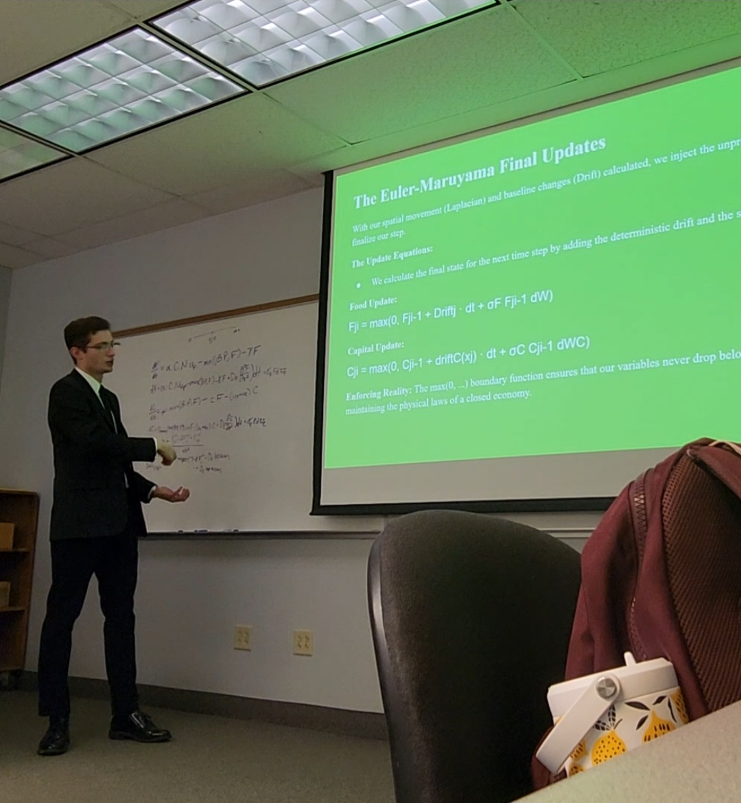
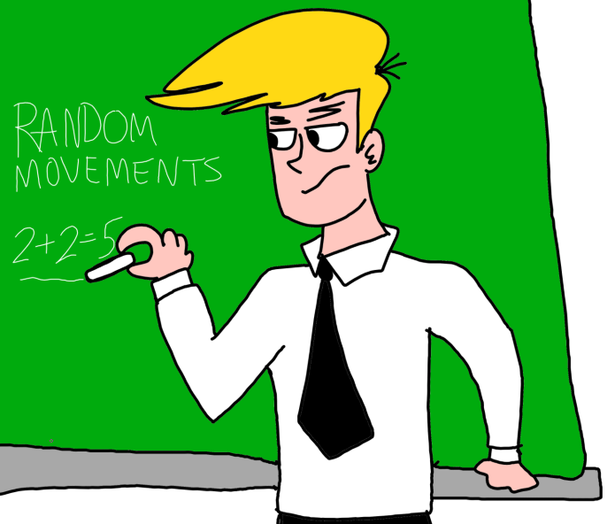
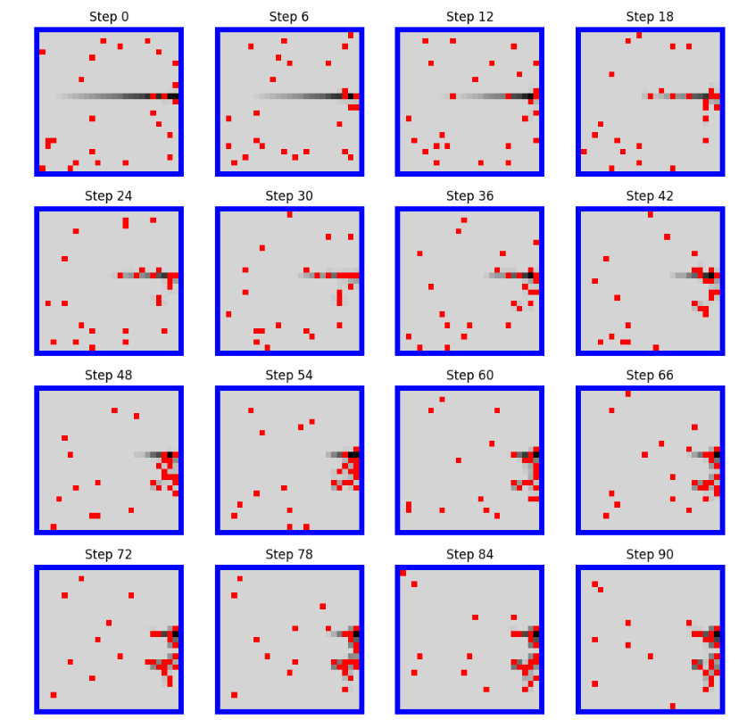
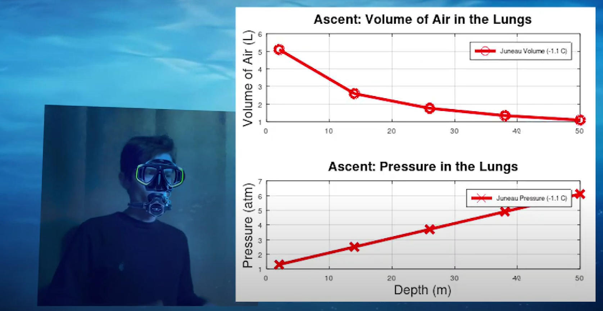

Re-Optimizing Food Systems: A Dynamic Analysis of Production, Sustainability, and Equity
Co-authored a dynamic framework using ODEs and SPDEs to simulate state-level food systems under government policy and political delays. Deployed an interactive "Model Playground" web platform and co-developed "ODE 3D".
Python
ODEs / SPDEs
JavaScript
HTML/CSS
Profit and Population Dynamics: Bioeconomic Modeling and Real Options Analysis of a Fishery
Co-authored a bioeconomic model simulating a single-species fishery under seasonal costs, economic shocks, and market volatility via Geometric Brownian Motion. Adapted the Black-Scholes PDE to perform Real Options Analysis.
Python
SciPy ODEs
GBM
Black-Scholes

Cellular Automaton Simulation of Open-Field Foraging with Area-Restricted Search
Modeled animal foraging on a 20×20 grid through three phases consisting of random walk, memory diffusion, and area-restricted search as these demonstrated how spatial memory influences search efficiency.
Python
Cellular Automata
Diffusion Models

Analyzing Ant Behavior: The Impact of Chemical Signals and Environmental Factors in a Simulation
Simulated ant foraging behavior using a Python-based cellular automaton model incorporating dynamic pheromone diffusion and evaporation. Analyzed emergent trail formation across varying population densities.
Python
Cellular Automata
Math Modeling

Diving into the Depths: Unraveling the Hidden Dynamics of Pressure and Volume in Scuba Diving
Developed mathematical models using Boyle's Law and hydrostatic pressure to analyze air compression and pressure-volume changes at varying depths using real seawater temperature data.
MATLAB
Boyle's Law
Physics Models

The Secret Treasure Hunt Experience
An ArcGIS Web Experience exploring Byron Preiss's real-life treasure hunt involving 12 buried casques across North America. Features interactive maps, historical context, and clue interpretations.
ArcGIS Pro
GIS Research
Data Viz